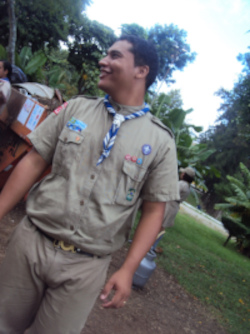
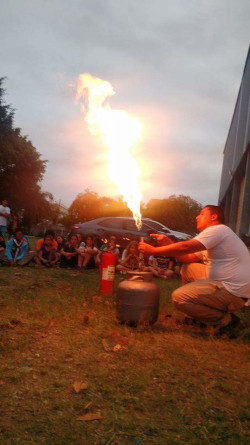
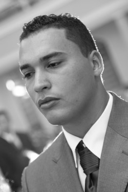
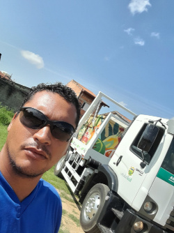
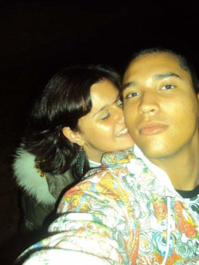
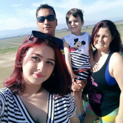

Bem-vindo ao meu portfólio! 🖖
Aqui você encontrará alguns dos meus projetos mais recentes e um pouco da minha história.
Sobre Mim
Sou um desenvolvedor em formação, atualmente cursando Análise e Desenvolvimento de Sistemas. Estou empenhado em aprimorar minhas habilidades em desenvolvimento fullstack, com conhecimento em Python e Flask, além de uma introdução ao Node.js. Atualmente, estou realizando cursos de HTML, CSS e JavaScript para fortalecer minha base de conhecimentos.
No meu portfólio, destaco projetos que refletem meu aprendizado e dedicação, incluindo:
Sistema de Gerenciamento de Estoque: Uma aplicação desenvolvida com Python e Flask, focada no controle e gerenciamento de produtos, que integra funcionalidades de cadastro, consulta e movimentação de estoque.
Sistema para Salão de Beleza: Em desenvolvimento, este projeto busca criar uma plataforma abrangente para gerenciamento de clientes, serviços, agendamentos e transações financeiras, priorizando uma experiência de usuário intuitiva.
Análise de Dados de Vendas: Um projeto que utiliza bibliotecas como Pandas e Matplotlib para manipular e visualizar dados, permitindo insights valiosos sobre o desempenho de vendas em uma empresa de varejo.
Minha experiência no GitHub é focada em meus projetos pessoais, onde estou documentando meu aprendizado e desenvolvimento. Embora ainda não tenha colaborado em projetos de código aberto, estou disposto a ajudar e contribuir sempre que surgir a oportunidade.
Minha vida em imagens
     Habilidades
-
HTML
CSS
JavaScript
Python
Flask
Node.js
SQL
Experiências Acadêmicas
Estudos em Tecnologia da Informação:
Cursando o primeiro semestre em Análise e Desenvolvimento de Sistemas (Anhanguera)
Curso livre em Git/GitHub, HTML/CSS e Javascript (Curso em Video
Aprendizado em Programação
Estou desenvolvendo habilidades em Python e JavaScript...
Cursos Extras:
Minhas Experiências Profissionais
Aviação do Exército (2009-2017):
Auxiliar de pista, Auxiliar de mecânico de aeronaves, Ferramenteiro, Motorista "D", Líder de pelotão.TcTau (2017-2018):
Motorista/Cobrador.EcoTaubaté Ambiental S/A (2018-Atual):
Motorista "D", Operador de Poliguindaste e guindalto.Projetos

Clone do Flappy Bird

Sistema de Estoque

Outro Projeto